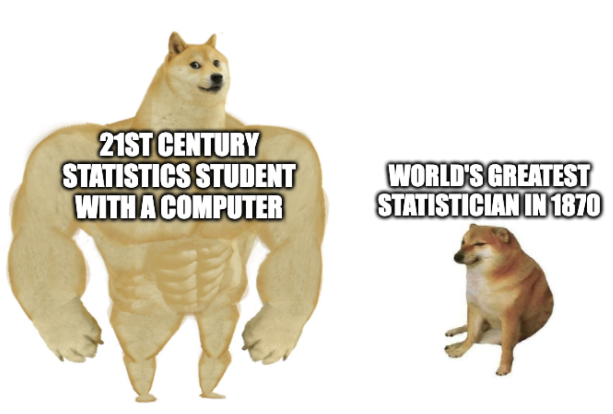
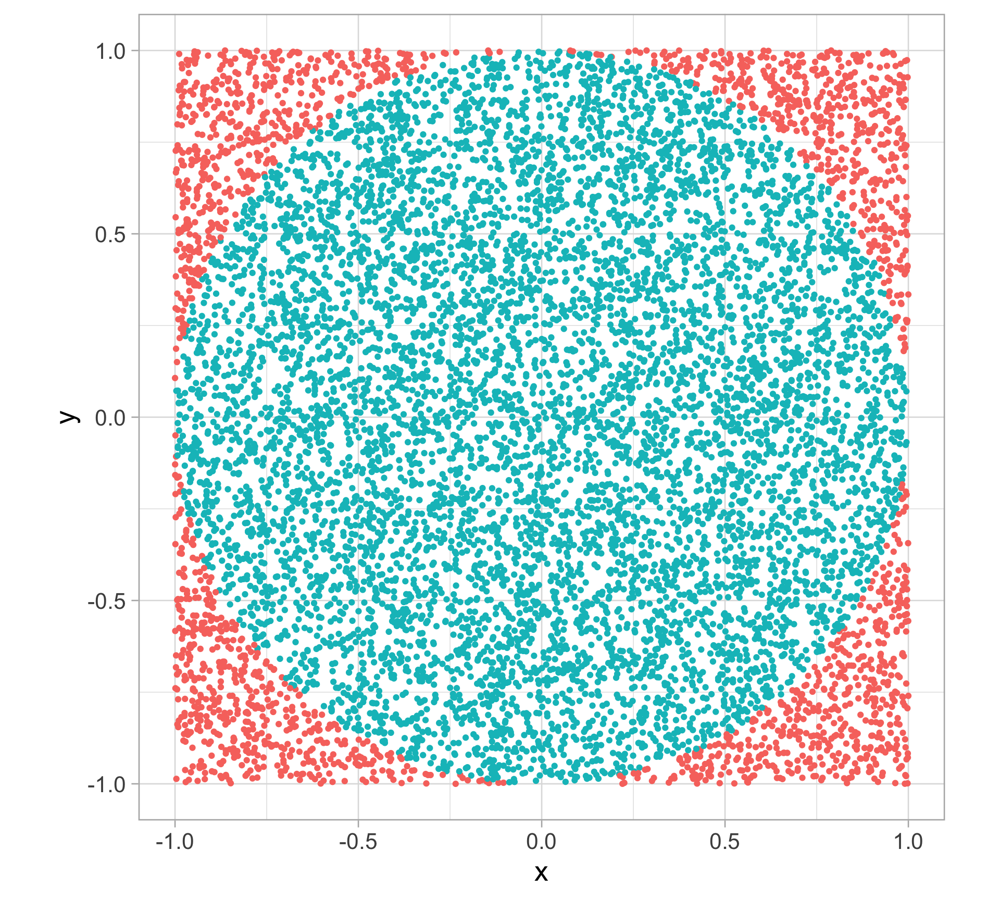
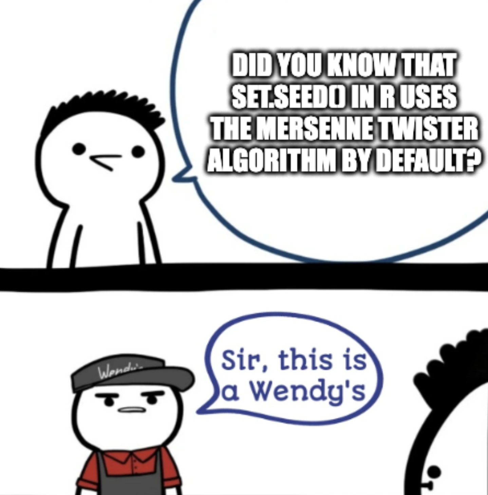
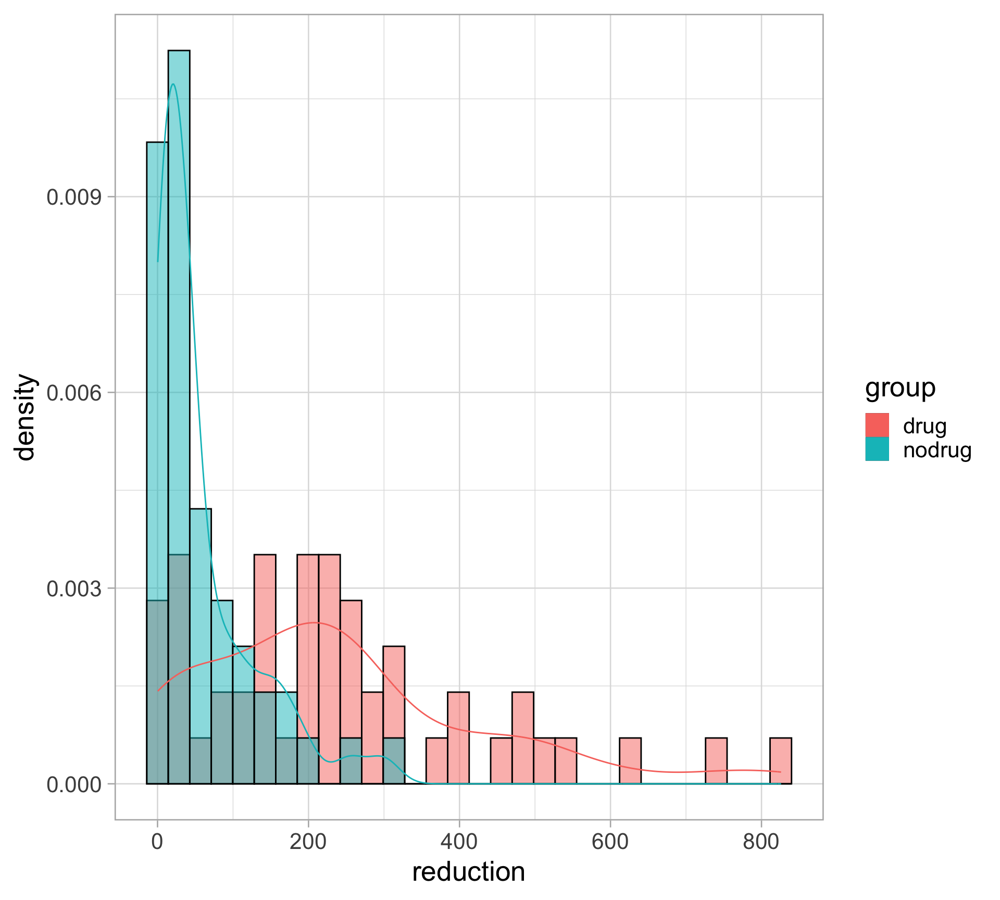

Department of Statistics & Data Science Carnegie Mellon University
Background
Why simulation?
We’re in the 21st century!
Simulations can often be
easier than hand calculations
made more realistic than hand calculations
R provides unique access to great (statistical) simulation tools (compared to other languages)

Sampling from a given vector
To sample from a given vector, use sample()
# https://benjaminleroy.github.io/documents/36350/Lectures/4.1_simulation_data.html# base R built in English alphabet: letterssample(letters, size =5) # sample without replacement, by default
[1] "e" "a" "i" "z" "n"
sample(c(0, 1), size =7, replace =TRUE) # sample with replacement
tibble(x, y, inside) |>ggplot(aes(x, y, color =factor(inside))) +geom_point(show.legend =FALSE) +coord_equal()

Pseudorandomness and seeds
Same command, different results?
Not surprisingly, we get different sample draws each time we call rnorm()
mean(rnorm(100))
[1] -0.0928059
mean(rnorm(100))
[1] 0.08249062
mean(rnorm(100))
[1] -0.09859748
Is it really random?
Random numbers generated in R (or any language) are not truly random; they are what we call pseudorandom
These are numbers generated by computer algorithms that very closely mimick truly random numbers
The default algorithm in R is called the Mersenne Twister

Setting the random seed
All pseudorandom number generators depend on what is called a seed value
This puts the random number generator in a well-defined state, so that the numbers it generates, from then on, will be reproducible
The seed is just an integer, and can be set with set.seed()
The reason we set it: so that when someone else runs our simulation code, they can see the same—albeit, still random—results that we do
Note: set.seed() will be helpful later on for things like cross-validation, \(k\)-means clustering, etc. — basically anything that involves randomly sampling of the data
Setting the random seed
Same seed, same results
set.seed(1999)rnorm(3)
[1] 0.73267249 -0.03782971 1.20300914
set.seed(1999)rnorm(3)
[1] 0.73267249 -0.03782971 1.20300914
set.seed(1999)rnorm(3)
[1] 0.73267249 -0.03782971 1.20300914
Iteration and simulation
Example: drug effect model
Suppose we have a model for the way a drug affected certain patients
All patients will undergo chemotherapy. We believe those who aren’t given the drug experience a reduction in tumor size of percentage \(X_{\mathrm{no\,drug}} \sim 100 \cdot \mathrm{Exponential}(R)\), where \(R \sim \mathrm{Uniform}(0,1)\)
And those who were given the drug experience a reduction in tumor size of percentage \(X_{\mathrm{drug}} \sim 100 \cdot \mathrm{Exp}(2)\)
Suppose some scientist collaborators are wondering how many patients would we need to have in each group (drug, no drug), in order to reliably see that the average reduction in tumor size is large…
What would you do?
Before: get out your pen and paper, make some approximations
Now: just simulate from the model, no approximations
Example: drug effect model
# suppose each group has 50 subjectsset.seed(100)n_subjects <-50mean_drug <-2mean_nodrug <-runif(n_subjects, 0, 1)x_drug <-100*rexp(n_subjects, 1/ mean_drug) x_nodrug <-100*rexp(n_subjects, 1/ mean_nodrug)tibble(x_drug, x_nodrug) |>pivot_longer(everything(),names_to ="group",names_prefix ="x_",values_to ="reduction") |>ggplot(aes(x = reduction, y =after_stat(density), color = group)) +geom_histogram(aes(fill = group), alpha =0.5, color ="black",position ="identity") +geom_density(aes(color = group))

Good practices
Repetition and reproducibility
One single simulation is not always trustworthy (depends on the situation, of course)
In general, simulations should be repeated and aggregate results reported — requires iteration!
To make random number draws reproducible, we must set the seed with set.seed()
More than this, to make simulation results reproducible, we need to follow good programming practices (see this for example)
Gold standard: any time you show a simulation result (a figure, a table, etc.), you have code that can be run (by anyone) to produce exactly the same result
Iteration and simulation
Writing a function to complete a single run of your simulation/analysis is often very helpful
This allows the simulation itself to be intricate (e.g., intricate steps, several simulation parameters), but makes running the simulation simple
Then you can use iteration to run your simulation/analysis over and over again
Iteration and simulation
Example: Revisiting \(k\)-means clustering with gapminder data - compute the total within-cluster variation for different values of \(k\)
library(dslabs)clean_gapminder <- gapminder |>filter(year ==2011, !is.na(gdp)) |>mutate(std_log_gdp =as.numeric(scale(log(gdp), center =TRUE, scale =TRUE)),std_life_exp =as.numeric(scale(life_expectancy, center =TRUE, scale =TRUE)))
# function to perform clustering for each value of kgapminder_kmeans <-function(k) { kmeans_results <- clean_gapminder |>select(std_log_gdp, std_life_exp) |>kmeans(centers = k, nstart =30) kmeans_out <-tibble(clusters = k,total_wss = kmeans_results$tot.withinss)return(kmeans_out)}# number of clusters to search overn_clusters_search <-2:12# iterate over each cluster value to compute total wsskmeans_search <- n_clusters_search |>map(gapminder_kmeans) |>bind_rows()
Exporting and importing data
Reading/writing from/to a file
Sometimes simulations/analyses take a long time to run, and we want to save intermediate or final output, for quick reference later
Introducing the readr package (part of tidyverse; automatically loaded)
write_*() functions: exporting data
read_*() functions: importing data
Reading/writing from/to a file
write_csv() / read_csv(): export / import single R data frames or tibbles in .csv format
write_rds() / read_rds(): export / import single R objects (like a vector, matrix, list, data frame, etc.) in .rds format
Note that by default, the file will be written to the working directory (i.e. if you just specify the file name)
Example: saving \(k\)-means clustering results from earlier
# saving to a folder named "data" in the working directorywrite_csv(kmeans_search, "data/kmeans_search_results.csv")
File path and working directory
To read in a file, you need to use the correct path, which should be relative and NOT absolute (or a path pointing to a location outside of the project directory) (read more here)
The key to getting paths to work is to understand working directory. In R, use the function getwd()
Note: NEVER use setwd() to change working directory. It’s a bad practice. (Here’s why)
File path and working directory
Special paths
. is the working directory
~ is the home directory (e.g., on Quang’s laptop: /Users/qntkhvn)
.. is the parent directory. (e.g., ../steve.csv refers to a file called steve.csv in the directory that is one level above the working directory)
Common issue: By default, the working directory for an R Markdown or Quarto document is the directory in which that document is stored. This is NOT necessarily the working directory of your current R session.
Use list.files() to see what files are available in the working directory (or any other directory)